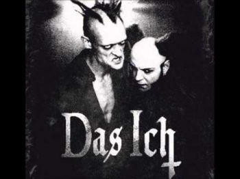

|

Das Ich — немецкая группа, играющая в стилях darkwave, industrial, EBM electro-gothic. Название Das Ich заимствовано из работ основателя психоанализа Зигмунда Фрейда (например Freud, Sigmund (1923), Das Ich und das Es) и тесно связано с термином Эго. Основной мотив творчества группы — экспрессионистские стихи, наложенные на электронную музыку. На концертах музыканты широко используют театральные приёмы, декорации, грим.
История группы:
Штефан Акерманн и Бруно Крамм познакомились ещё в 1986 году на одной из дискотек провинциального баварского городка Байройт. Бруно с детства играл на фортепиано, а Штефан, по его словам, посещал курсы актеской игры, хотя с детства проявлял артистические способности. В 1987 они организовали электропанк проект Dying Moments, который не имел большого успеха.
Группа Das Ich появилась спустя два года, в 1989 году, хотя некоторые песни («Gottes Tod», «Sodom und Gomorrha», «Lugen und Das Ich»), принёсшие ей популярность, были задуманы ещё в 1988. Группа стала одним из основателей и основных участников движения начала девяностых «Neue Deutsche Todeskunst» (Новое немецкое искусство смерти).
Первый релиз группы имел провокационное название «Satanische Verse». Он вышел в 1990, вскоре после скандала с книгой «Сатанинские стихи» Салмана Рушди, за которую тот был приговорен к смерти в Иране. Первый LP группы «Die Propheten» вышел в Германии в 1991 на собственном лейбле Крамма Danse Macabre и был переиздан в США в 1997. Сквозная тема альбома — освобождение человека от религии.
Альбом 1994 «Staub» содержит более сложные, «симфонические» аранжировки при сохранении постиндустриальной основы музыки. С этого времени Крамм начинает широко использовать классические инструменты в своих аранжировках. Альбом 1995 года «Die Liebe» был записан совместно с дэт-метал-группой Atrocity и стал одним из первых примеров плодотворного сотрудничества между метал- и готик-коллективами.
Альбом «Egodram», изданный в 1997 на лейбле Edel Records, получился довольно танцевальным по звучанию, особенно в сравнении с ранним творчеством группы. В том же году Крамм покупает старинный замок, служивший тюрьмой в средние века, для своей студии и лейбла Danse Macabre.
В 1997—1998 группа работает над альбомом «Morgue» (Морг). Альбом создан на основе цикла стихотворений поэта-патологоанатома Готфрида Бенна (Gottfried Benn), «Morgue und andere Gedichte», написанного в 1912.
Альбом «Antichrist» вышел в 2001. Основная тема альбома — критический анализ современной мировой политики. В 2002—2006 группа выпускает два DVD и два альбома ремиксов. Das Ich, начиная с 1994, успешно гастролирует в США, а в 2006 приезжает также в Бразилию и Россию.
Альбом «Lava» был выпущен в 2004 году, в двух версиях — «Lava: Ashe» и «Lava: Glut». На одном из дисков были записаны традиционные версии песен, на втором — их же танцевальные ремиксы.
В 2006-ом Das Ich записали пластинку «Cabaret». После неё Крамм и Аккерманн выпустили только EP под названием «Kannibale».
6-го сентября 2010 года была закончена работа над абсолютно новым альбомом Das Ich — «Koma». Он представляет собой смесь культурных влияний Дальнего Востока, классики, электроники и экспрессионизма. Альбом был презентован в виде CD и Collectors Edition Box Set (строго ограниченный тиражом в 500 копий). Box Set, явно вдохновленный манга стилем, содержит CD, книгу-комикс, футболку, значок и наклейку от Danse Macabre.
В 2011 году вокалист Das Ich Штефан Аккерманн перенёс инсульт. Во все последующие туры группа в этом году ездила в изменённом составе: Бруно Крамм в роли основного вокалиста + приглашённые вокалисты.
|